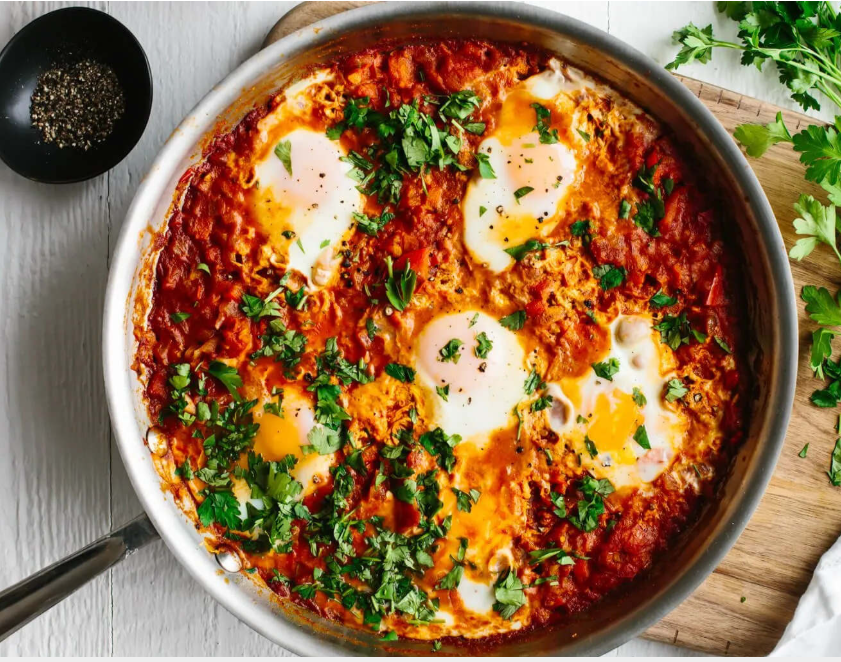
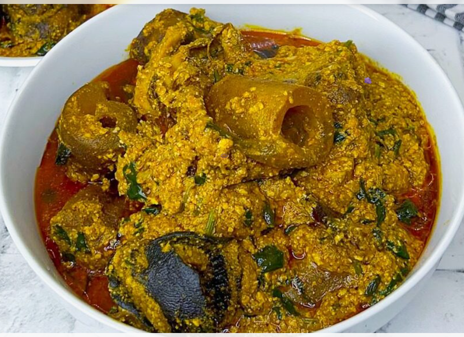
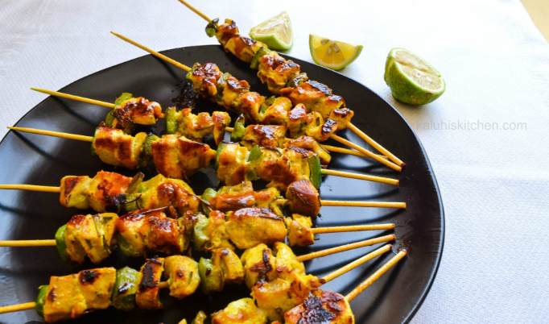
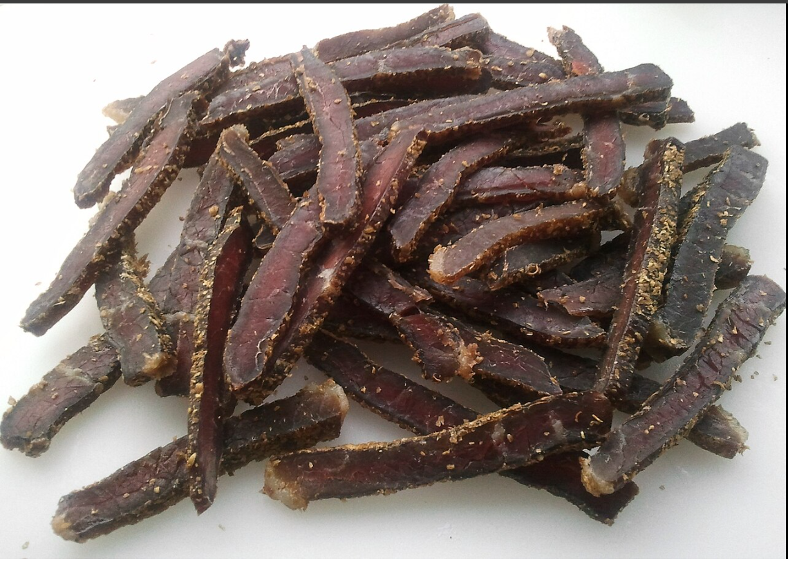

North Africa

Couscous
Ingredients
- 1 cup couscous
- 1 cup water
- Vegetables
- Chicken or beef stew
- Salt and spices
Recipe
Boil water and add couscous. Cover for 5 minutes until soft. Prepare vegetables and stew separately, then serve on top of the couscous.

Shakshouka
Ingredients
- 4 eggs
- Tomatoes
- Onion
- Bell peppers
- Garlic
- Spices
Recipe
Cook onions, peppers, garlic, and tomatoes into a sauce. Crack eggs into the sauce and cook until the eggs are set.
West Africa

Jollof Rice
Ingredients
- 2 cups rice
- Tomatoes
- Onions
- Peppers
- Chicken stock
- Spices
Recipe
Blend tomatoes, onions, and peppers into sauce. Cook the sauce, add rice and stock, then simmer until tender.

Egusi Soup
Ingredients
- Ground melon seeds
- Palm oil
- Spinach
- Meat or fish
- Seasoning
Recipe
Fry onions and palm oil, add egusi paste and stock. Add meat, fish, and vegetables, then simmer until thick.
East Africa

Mandazi
Ingredients
- Flour
- Sugar
- Coconut milk
- Yeast
- Oil
Recipe
Mix ingredients into dough and let rise. Cut into shapes and deep fry until golden brown.

Mshikaki
Ingredients
- Beef cubes
- Garlic
- Lemon juice
- Spices
- Skewers
Recipe
Marinate beef with spices and garlic. Thread onto skewers and grill over charcoal until cooked.
Southern Africa

Seswaa
Ingredients
- Beef or goat meat
- Salt
- Water
Recipe
Boil meat slowly with salt until very soft. Pound or shred the meat and serve with pap.

Biltong
Ingredients
- Beef strips
- Vinegar
- Salt
- Coriander
- Black pepper
Recipe
Season beef with vinegar and spices. Hang the meat to air dry for several days until cured.